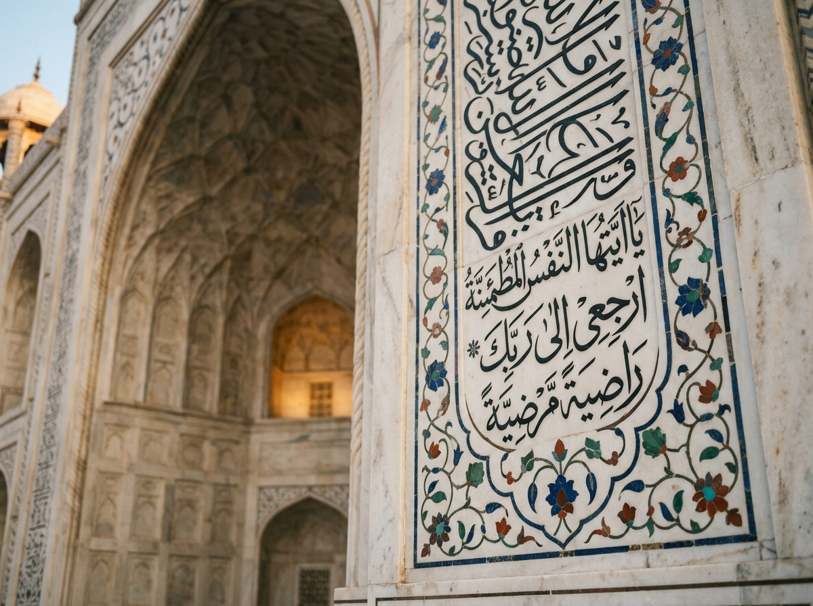

PAVILION I
01
Foundational Markup & Structure15 Programs
Hall of Inscriptions
HTML5 semantic elements, tables, forms and multimedia
The HTML practicals are stored as root-level files named html-01 through html-15.
Semantic HTML5TablesFormsAudio & Video